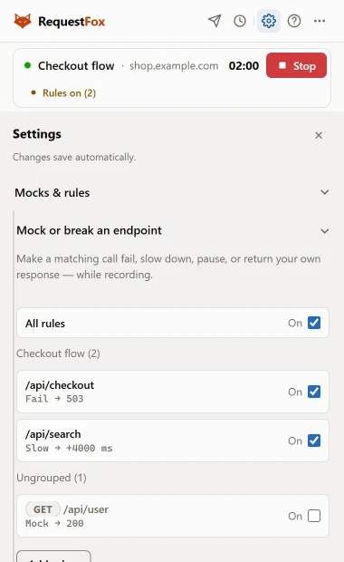

Шаги
Один раз запишите настоящий вызов
Нажмите Начать запись и сделайте то, что вызывает этот запрос, чтобы у RequestFox были его настоящие статус, заголовки и тело как отправная точка.
Нажмите «Подмена» на карточке
Откройте карточку вызова и нажмите Подмена рядом с Повторить. В диалоге — ответ, который прислал сервер: его статус и тело. Это работает и для вызова, который вообще не получил ответа (бэкенд лежит): тогда в диалоге сначала 200 и
{}.Измените ответ и подмените
Замените статус или тело тем, что хотите проверить: пустым списком, ошибкой, пропавшим полем. Нажмите Подменить. Другие параметры… открывает правило целиком (метод, как сравнивается адрес, тип содержимого, операция GraphQL).
Вызовите запрос ещё раз
Перезагрузите страницу или повторите действие на ней. Страница получает ваш ответ, а карточка показывает Подмена, чтобы никто не завёл это как баг. Повторить и Составить всегда обращаются к настоящему серверу, поэтому смотрите подмену через саму страницу.
Если подмена не отвечает
Откройте вызов снова: если подмена на него не ответила, карточка говорит почему, вот такими словами.
- Карточка говорит: Не подменено: подмена выключена. Нажмите Подмена выкл. на карточке, затем Включить.
- Не подменено: страница сделала этот вызов раньше, чем RequestFox был готов. Перезагрузите страницу ещё раз. Самые первые вызовы страницы могут прийти раньше, чем RequestFox готов; после второй перезагрузки подмена на них отвечает.
- Не подменено: этот вызов сделала не сама страница (воркер, beacon или фрейм, недоступный RequestFox), поэтому подмена не может на него ответить. Подмените вместо этого вызов, который делает сама страница, если такой есть.
- Вы нажали «Повторить» или отправили его из «Составить»: Не подменено: «Повторить» и «Составить» всегда обращаются к настоящему серверу. Используйте саму страницу.
- Ничего не записывается, а подмена не оставлена включённой: карточка говорит Подмена на паузе. Нажмите Начать запись или оставьте её включённой (ниже).
- Страница всё ещё показывает старые данные: перезагрузите её. Подмена отвечает на следующий вызов, а не на тот, что страница уже сделала.
Оставить подмену включённой без записи
На карточке нажмите Подменено, затем Оставить включённым без записи… и укажите сайт (например, localhost). Тогда подмена отвечает на этом сайте во всех вкладках, без записи, пока вы её не выключите; чип под верхней панелью говорит Набор подмен включён: localhost с именем набора.
Подменить вызов, который ни разу не записывался
Настройки → Подмены и правила → Подменить или сломать эндпоинт → Добавить правило…, режим «Подмена»: введите часть адреса для сравнения, статус и тело.
Вместо этого сломать вызов
Настройки → Подмены и правила → Подменить или сломать эндпоинт → Добавить правило…. Укажите часть адреса для сравнения, метод и режим:
- Сбой: отвечает выбранным вами статусом ошибки.
- Сетевая ошибка: падает так, как падает оборванное соединение.
- Замедление или Ограничение скорости: добавляет задержку или замедляет ответ в зависимости от его размера.
- Подмена: возвращает ответ, который вы напишете.
- Точка останова (запрос) или Точка останова (ответ): ставит вызов на паузу, чтобы вы изменили его, прежде чем он пойдёт дальше.
- По кругу: на каждый вызов отвечает по-разному.
Вызовы, которые вы сломали нарочно, помечены как «Имитация».

Когда закончите
Карточка вызова говорит «Подменено»: нажмите, чтобы изменить ответ, оставить подмену включённой без записи, выключить или удалить её. После «Стоп» там написано «Подмена на паузе»: подмена ждёт следующей записи. Пока включено хоть одно правило, панель записи говорит «Подмены включены (n)»; нажмите, чтобы увидеть все правила. Подмена отвечает, только пока RequestFox записывает вкладку (если вы не оставили её включённой без записи), и только на вызовы, которые страница делает через fetch или XMLHttpRequest (не на вызовы воркеров, не на картинки и скрипты).
Local overrides в DevTools, Mock Service Worker или расширение?
Три способа изменить то, что возвращает вызов API в браузере, рядом друг с другом. Local overrides входят в Chrome DevTools, так что ставить ничего не нужно. Mock Service Worker — библиотека, которую вы добавляете в своё приложение. Расширение вроде RequestFox работает на любом сайте и отталкивается от вызова, который оно записало.
| Local overrides в DevTools | Mock Service Worker | Правило подмены в RequestFox | |
|---|---|---|---|
| Где живёт | В Chrome DevTools; изменения сохраняются файлами в выбранную вами папку [1] | Библиотека в коде вашего проекта [2] | В расширении, рядом с вашей страницей |
| Нужен код приложения | Нет; может подменять ресурсы, к которым у вас нет доступа [1] | Да | Нет |
| Что меняет | Содержимое и заголовки ответа, в том числе ответов XHR и fetch [1] | Запросы вашего приложения: перехватывает, наблюдает и меняет их [2] | Статус, заголовки и тело записанного вызова; или заставляет вызов упасть, замедлиться или встать на паузу |
| Стоит знать | Пока overrides включены, кеш браузера отключён [1] | В браузере использует Service Worker API; в Node.js работает иначе [2] | Меняет вызовы fetch и XMLHttpRequest, которые делает страница, и помечает их как «Подмена» или «Имитация» |
Источники
- Chrome for Developers, «Override web content and HTTP response headers locally». Проверено . developer.chrome.com
- Mock Service Worker, «Introduction». Проверено . mswjs.io
Что-то здесь устарело? Напишите нам по адресу из политики конфиденциальности, и мы исправим.
Далее
- Повторить и изменить запрос
Отправьте записанный вызов снова, с изменениями или без.
- Для фронтенд-разработчиков
Загрузка, пустые состояния и ошибки без бэкенда.